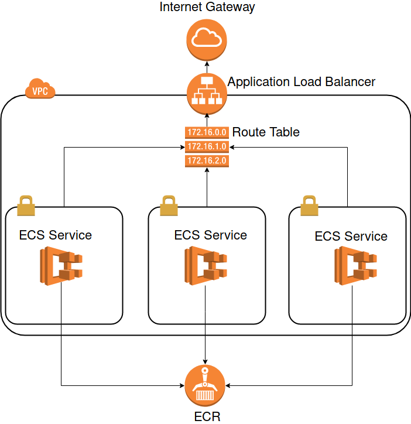
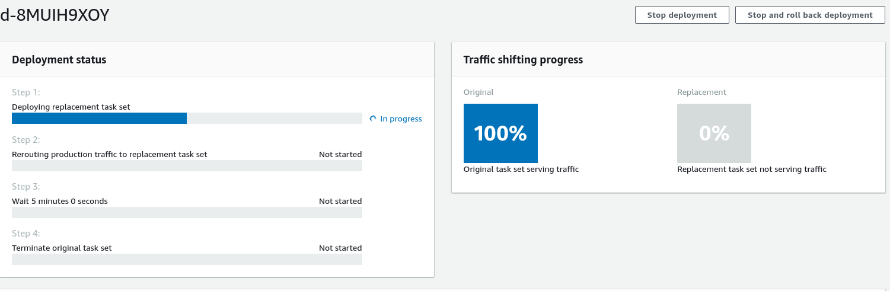

Last week I came along a problem regarding the deployment of an ECS Service. I wanted to use the newly announced Blue/Green-Deployment powered by CodeDeploy, because for the time being I only needed one Fargate instance to run. The classic ECS Deployment destroyed one instance and started a new one in it’s place. With one instance this would mean, we would have some downtime during the start of the new container.
With Blue/Green Deployment a completely new group of instances will be started. If everything went fine, the load balancer forwards the traffic to the new group and the old gets shut down afterwards. Even with only one running instance, a second gets started before the first will be destroyed and if the second is working correctly, the traffic switches over and the old will be destroyed afterwards. The traffic switch is a minimal downtime, which isn’t recognizable in normal operation.
In this post we will create a complete Continuous Delivery Pipeline with AWS CodePipeline, which consists of three stages. In the first stage (called source) the pipeline listens to master commits on the GitHub Repository of interest. The second stage (called build) builds a new docker image of the Dockerfile in the GitHub Repository and pushes the new image to AWS ECR. The last state (called deploy) does a blue green deployment to ECS with the new image.
The docker image is a simple HTML website with a message so we can see that the correct container is deployed.
The complete codebase can be found in this GitHub Repository.
We start by creating the infrastructure for the ECS Service itself.

As you can see we will build up a VPC with three subnets where the ECS Services can be spawned in. The ECS Services have access to the ECR to pull images. In front of our network is the load balancer, which redirects the traffic to the services.
Before we go into the infrastructure, we create a main.tf and create some variables, we need later and create the AWS provider.
variable "github_token" {
description = "The GitHub Token to be used for the CodePipeline"
type = "string"
}
variable "account_id" {
description = "id of the active account"
type = "string"
}
variable "region" {
description = "region to deploy to"
type = "string"
}
provider "aws" {
region = "${var.region}"
version = "2.7"
}Part 1: The VPC
We start with what is the basis of every AWS tutorial: The VPC.
locals {
subnets = {
"${var.region}a" = "172.16.0.0/21"
"${var.region}b" = "172.16.8.0/21"
"${var.region}c" = "172.16.16.0/21"
}
}
resource "aws_vpc" "this" {
cidr_block = "172.16.0.0/16"
enable_dns_support = true
enable_dns_hostnames = true
tags = {
Name = "example-vpc"
}
}
resource "aws_internet_gateway" "this" {
vpc_id = "${aws_vpc.this.id}"
tags = {
Name = "example-internet-gateway"
}
}
resource "aws_subnet" "this" {
count = "${length(local.subnets)}"
cidr_block = "${element(values(local.subnets), count.index)}"
vpc_id = "${aws_vpc.this.id}"
map_public_ip_on_launch = true
availability_zone = "${element(keys(local.subnets), count.index)}"
tags = {
Name = "${element(keys(local.subnets), count.index)}"
}
}
resource "aws_route_table" "this" {
vpc_id = "${aws_vpc.this.id}"
tags = {
Name = "example-route-table-public"
}
}
resource "aws_route" "this" {
route_table_id = "${aws_route_table.this.id}"
destination_cidr_block = "0.0.0.0/0"
gateway_id = "${aws_internet_gateway.this.id}"
}
resource "aws_route_table_association" "this" {
count = "${length(local.subnets)}"
route_table_id = "${aws_route_table.this.id}"
subnet_id = "${element(aws_subnet.this.*.id, count.index)}"
}Here we create a VPC with three subnets in the three AZs of the defined region. The region is a variable which is set in a terraform.tfvars file (at least for me. You can choose other sources for input variables as well). We create a routing table with route associations to the three subnets and a route to an internet gateway. I won’t go into detail about the VPC. For more infos you can read my previous post in which I talk a bit more about VPCs. The difference this time is, that there are three subnets, which split up the whole CIDR space of the VPC. We are making three subnets, because we want to spawn instances randomly in different availability zones. If we increase the count of the running tasks, those will be split evenly over the different AZs. In the rare case of unavailability of one AZ, the app would still be available, because it’s also running in the other AZs.
Part 2: The Load Balancer
Now we need a load balancer, which is the key part of our Green/Blue Deployment. The Load Balancer has two target groups. We need the two target groups for the green/blue deployment later. That’s why we call one target group green and the other blue. The blue group will stay empty for the time being and we spawn everything in the green one.
data "aws_subnet_ids" "this" {
vpc_id = "${aws_vpc.this.id}"
}
resource "aws_security_group" "this" {
name = "allow-http"
vpc_id = "${aws_vpc.this.id}"
ingress {
from_port = 80
protocol = "tcp"
to_port = 80
cidr_blocks = ["0.0.0.0/0"]
}
egress {
from_port = 0
protocol = "-1"
to_port = 0
cidr_blocks = ["0.0.0.0/0"]
}
tags {
Name = "allow-http-sg"
}
}
resource "aws_lb" "this" {
name = "example-lb"
internal = false
load_balancer_type = "application"
security_groups = ["${aws_security_group.this.id}"]
subnets = ["${data.aws_subnet_ids.this.ids}"]
tags {
Name = "example"
}
}
locals {
target_groups = [
"green",
"blue",
]
}
resource "aws_lb_target_group" "this" {
count = "${length(local.target_groups)}"
name = "example-tg-${element(local.target_groups, count.index)}"
port = 80
protocol = "HTTP"
vpc_id = "${aws_vpc.this.id}"
target_type = "ip"
health_check {
path = "/"
port = 80
}
}
resource "aws_lb_listener" "this" {
load_balancer_arn = "${aws_lb.this.arn}"
port = "80"
protocol = "HTTP"
default_action {
type = "forward"
target_group_arn = "${aws_lb_target_group.this.*.arn[0]}"
}
}
resource "aws_lb_listener_rule" "this" {
listener_arn = "${aws_lb_listener.this.arn}"
"action" {
type = "forward"
target_group_arn = "${aws_lb_target_group.this.*.arn[0]}"
}
"condition" {
field = "path-pattern"
values = ["/*"]
}
}Beside of the before mentioned resources, we need a listener, which will listen on port 80 for this example and a security group. The security group allows incoming traffic via port 80 to the load balancer.
One more thing to point out is the health check on the target groups. Those are important for the blue/green deployment later, because only if the health check succeeds, the group switch will be made. By default the Load Balancer checks the health of the targets every 30 seconds. After 3 consecutive successful checks, the target is healthy and real traffic is forwarded to the target. If a service fails to answer with a 200 status code within 6 seconds three consecutive times, then the target is marked unhealthy and real traffic isn’t forwarded to this target.
Part 3: The ECS Service
Now we create the ECS Service. AWS has created some concepts on top of the docker container itself. The smallest unit on top of the container in AWS is the task definition. In the task definition, we define what information is passed to one or more containers when they are being run. Basically everything that can be passed as an argument to docker run and some more options can be set in the task definition. For example port mappings or environment variables etc..
Task definitions are normally written in JSON, but there is a module by cloudposse which allows you to write the task definition in terraform. This works similar to the aws_iam_policy_document. The advantage of writing those definitions in terraform is to get some more validation, before the resources get applied. Dump mistakes like missing mandatory attributes can be catched early this way.
Here is the basic overview what we are trying to achieve in this part:
To use the cloudposses module and create a container definition document we need to import the module:
locals {
container_name = "green-blue-ecs-example"
}
data "aws_ecr_repository" "this" {
name = "snowiow/${local.container_name}"
}
resource "aws_cloudwatch_log_group" "this" {
name = "example-app"
}
module "container_definition" {
source = "cloudposse/ecs-container-definition/aws"
version = "0.13.0"
container_name = "${local.container_name}"
container_image = "${data.aws_ecr_repository.this.repository_url}:latest"
port_mappings = [
{
containerPort = 80
},
]
log_options = {
awslogs-region = "${var.region}"
awslogs-group = "example-app"
awslogs-stream-prefix = "ecs-service"
}
}We also define the ECR repository as a data source where will pull the images from. The URL of the latest ECR image will be referenced as the container_image in the container definition. We also create a cloudwatch log group in which the ECS Service can write it’s logs. Therefore we also define the according log options in the container definition.
Because we are just hosting a simple HTML website, there isn’t much more going on in the container definition.
Now we need two roles. One which is used by the task, which is able to run the task definition and the actual rights of the container during runtime. Those are the so called task role and execution role.
resource "aws_ecs_cluster" "this" {
name = "example-cluster"
}
data "aws_iam_policy_document" "assume_by_ecs" {
statement {
sid = "AllowAssumeByEcsTasks"
effect = "Allow"
actions = ["sts:AssumeRole"]
principals {
type = "Service"
identifiers = ["ecs-tasks.amazonaws.com"]
}
}
}
data "aws_iam_policy_document" "execution_role" {
statement {
sid = "AllowECRPull"
effect = "Allow"
actions = [
"ecr:GetDownloadUrlForLayer",
"ecr:BatchGetImage",
"ecr:BatchCheckLayerAvailability",
]
resources = ["${data.aws_ecr_repository.this.arn}"]
}
statement {
sid = "AllowECRAuth"
effect = "Allow"
actions = ["ecr:GetAuthorizationToken"]
resources = ["*"]
}
statement {
sid = "AllowLogging"
effect = "Allow"
actions = [
"logs:CreateLogStream",
"logs:PutLogEvents",
]
resources = ["*"]
}
}
data "aws_iam_policy_document" "task_role" {
statement {
sid = "AllowDescribeCluster"
effect = "Allow"
actions = ["ecs:DescribeClusters"]
resources = ["${aws_ecs_cluster.this.arn}"]
}
}
resource "aws_iam_role" "execution_role" {
name = "ecs-example-execution-role"
assume_role_policy = "${data.aws_iam_policy_document.assume_by_ecs.json}"
}
resource "aws_iam_role_policy" "execution_role" {
role = "${aws_iam_role.execution_role.name}"
policy = "${data.aws_iam_policy_document.execution_role.json}"
}
resource "aws_iam_role" "task_role" {
name = "ecs-example-task-role"
assume_role_policy = "${data.aws_iam_policy_document.assume_by_ecs.json}"
}
resource "aws_iam_role_policy" "task_role" {
role = "${aws_iam_role.task_role.name}"
policy = "${data.aws_iam_policy_document.task_role.json}"
}First of all we create the ECS Cluster, because we want to reference it as the only resource for the task role policy document later.
Afterwards we need an assume role policy document, which can be assumed by ECS Tasks. This document will be attached to both the task role and execution role. So both can be assumed by our task, which will be created next.
Now we define the permissions of the execution role and task role. It is important that we are able to download images from the ECR during the task execution, as well as writing logs, so we pass the needed permissions to the document and restrict the ECR download actions to the ECR Repository of the example app. The task role needs permissions to describe the cluster it can be run in.
Lastly we create the execution role and task role and append the policy documents to those roles.
Now we have everything in place to create the task definition and service:
resource "aws_ecs_task_definition" "this" {
family = "green-blue-ecs-example"
container_definitions = "${module.container_definition.json}"
execution_role_arn = "${aws_iam_role.execution_role.arn}"
task_role_arn = "${aws_iam_role.task_role.arn}"
network_mode = "awsvpc"
cpu = "0.25 vcpu"
memory = "0.5 gb"
requires_compatibilities = ["FARGATE"]
}
resource "aws_security_group" "ecs" {
name = "allow-ecs-traffic"
vpc_id = "${aws_vpc.this.id}"
ingress {
from_port = 80
protocol = "tcp"
to_port = 443
cidr_blocks = ["0.0.0.0/0"]
}
egress {
from_port = 0
protocol = "-1"
to_port = 0
cidr_blocks = ["0.0.0.0/0"]
}
}
resource "aws_ecs_service" "this" {
name = "example-service"
task_definition = "${aws_ecs_task_definition.this.id}"
cluster = "${aws_ecs_cluster.this.arn}"
load_balancer {
target_group_arn = "${aws_lb_target_group.this.0.arn}"
container_name = "${local.container_name}"
container_port = 80
}
launch_type = "FARGATE"
desired_count = 3
network_configuration {
subnets = ["${aws_subnet.this.*.id}"]
security_groups = ["${aws_security_group.ecs.id}"]
assign_public_ip = true
}
depends_on = ["aws_lb_listener.this"]
}For the task definition we don’t set anything special, except that we force the awsvpc network mode to spawn it in our earlier created VPC. In the service we define a load balancer block. This way any task started by this service will be spawned in the target group of our load balancer. Here we start to fill the green group initially. We also have to set the subnets, where the service spawns the tasks in. The service has a desired task count of three. AWS balances these three tasks in all of our subnets evenly, so we will have one task running in every subnet.
As the security group we use one with allowed ingress from port 80 to 443. The normal traffic from the load balancer comes from port 80, but we also need to be able to download the docker image from the ECR, which will be done via HTTPS. We also need to assign a public IP to the task to be able to download the image.
It is important to note, that we need to explicitly name a dependency to the aws_lb_listener. Because we apply anything simultaneously, the service would otherwise just wait for the target group to be finished. But then the creation of the ECS Service would give us an error, because the created target group isn’t linked to a load balancer. That’s why we need to explicitly wait for the listener to be created before we start to create the ECS Service.
At this point we have a fully working infrastructure to host our dockerized application, which can be scaled by modifying the cpu and memory attributes and a new terraform apply. We can also add an Autoscaling Policy to scale our task count automatically when the traffic increases.
Part 4: The Deployment
Now that the application is up and running, we need some sort of automatic building and deploying. Therefore we use the AWS Codepipeline, which will consist of three steps:
- Source: Trigger the pipeline through a master commit in the GitHub repository of the application
- Build: Build a new container and push it to the ECR
- Deploy: Do a Blue/Green Deployment in our ECS Service with the latest container version
We start by creating the pipeline with it’s first stage. Therefore we need a new IAM Role for the pipeline and a S3 Bucket, where the interim results of the pipeline are saved and downloaded by the next step of the pipeline. The S3 Bucket is very straight forward:
resource "aws_s3_bucket" "codepipeline" {
bucket = "example-app-codepipeline"
}and the iam role:
data "aws_iam_policy_document" "assume_by_pipeline" {
statement {
sid = "AllowAssumeByPipeline"
effect = "Allow"
actions = ["sts:AssumeRole"]
principals {
type = "Service"
identifiers = ["codepipeline.amazonaws.com"]
}
}
}
resource "aws_iam_role" "pipeline" {
name = "pipeline-example-role"
assume_role_policy = "${data.aws_iam_policy_document.assume_by_pipeline.json}"
}
data "aws_iam_policy_document" "pipeline" {
statement {
sid = "AllowS3"
effect = "Allow"
actions = [
"s3:GetObject",
"s3:ListBucket",
"s3:PutObject",
]
resources = [
"${aws_s3_bucket.this.arn}",
"${aws_s3_bucket.this.arn}/*",
]
}
}
resource "aws_iam_role_policy" "pipeline" {
role = "${aws_iam_role.pipeline.name}"
policy = "${data.aws_iam_policy_document.pipeline.json}"
}For the moment we only give the pipeline the permissions to list, download and upload to the bucket, we created before.
Now we can create the pipeline.
resource "aws_codepipeline" "this" {
name = "example-pipeline"
role_arn = "${aws_iam_role.pipeline.arn}"
artifact_store {
location = "${aws_s3_bucket.this.bucket}"
type = "S3"
}
stage {
name = "Source"
action {
name = "Source"
category = "Source"
owner = "ThirdParty"
provider = "GitHub"
version = "1"
output_artifacts = ["source"]
configuration = {
OAuthToken = "${var.github_token}"
Owner = "snowiow"
Repo = "green-blue-ecs-example"
Branch = "master"
}
}
}
}We define GitHub as the source and my repository’s master branch as the start trigger. You will need an OAuthToken as well. This way the pipeline will be notified when a new commit happened. The other way would be to let the pipeline pull information from GitHub every now and then. But with this option you will always have some time between the commit and the start of the pipeline. To generate a GitHub Token with the right scopes, you can follow this guide from AWS. If you copied the token you can use it for example as a variable in terraform. Another way is to set the GITHUB_TOKEN environment variable. This way you can leave the OAuthToken attribute unset.
Now we will add the build stage. First of all, the CodeBuild needs it’s own set of permissions, so we do the usual stuff to create an IAM role for the CodeBuild:
data "aws_iam_policy_document" "assume_by_codebuild" {
statement {
sid = "AllowAssumeByCodebuild"
effect = "Allow"
actions = ["sts:AssumeRole"]
principals {
type = "Service"
identifiers = ["codebuild.amazonaws.com"]
}
}
}
resource "aws_iam_role" "codebuild" {
name = "codebuild-example-role"
assume_role_policy = "${data.aws_iam_policy_document.assume_by_codebuild.json}"
}
data "aws_iam_policy_document" "codebuild" {
statement {
sid = "AllowS3"
effect = "Allow"
actions = [
"s3:GetObject",
"s3:ListBucket",
"s3:PutObject",
]
resources = [
"${aws_s3_bucket.this.arn}",
"${aws_s3_bucket.this.arn}/*",
]
}
statement {
sid = "AllowECRAuth"
effect = "Allow"
actions = ["ecr:GetAuthorizationToken"]
resources = ["*"]
}
statement {
sid = "AllowECRUpload"
effect = "Allow"
actions = [
"ecr:InitiateLayerUpload",
"ecr:UploadLayerPart",
"ecr:CompleteLayerUpload",
"ecr:BatchCheckLayerAvailability",
"ecr:PutImage",
]
resources = ["${data.aws_ecr_repository.this.arn}"]
}
statement {
sid = "AllowECSDescribeTaskDefinition"
effect = "Allow"
actions = ["ecs:DescribeTaskDefinition"]
resources = ["*"]
}
statement {
sid = "AllowLogging"
effect = "Allow"
actions = [
"logs:CreateLogGroup",
"logs:CreateLogStream",
"logs:PutLogEvents",
]
resources = ["*"]
}
}
resource "aws_iam_role_policy" "codebuild" {
role = "${aws_iam_role.codebuild.name}"
policy = "${data.aws_iam_policy_document.codebuild.json}"
}Because our CodeBuild should be able to upload Images to the ECR, we give the according permissions here. The CodeBuild also needs permissions to access the S3 Bucket, to download the artifact from the Source (GitHub). Otherwise the Codebuild wouldn’t be able to access the downloaded source code of GitHub and therefeore couldn’t create the Docker Image.
Now we are able to create the Codebuild project like this:
resource "aws_codebuild_project" "this" {
name = "example-codebuild"
description = "Codebuild for the ECS Green/Blue Example app"
service_role = "${aws_iam_role.codebuild.arn}"
artifacts {
type = "CODEPIPELINE"
}
environment {
compute_type = "BUILD_GENERAL1_SMALL"
image = "aws/codebuild/docker:18.09.0"
type = "LINUX_CONTAINER"
privileged_mode = true
environment_variable {
name = "REPOSITORY_URI"
value = "${data.aws_ecr_repository.this.repository_url}"
}
}
source {
type = "CODEPIPELINE"
}
}Nothing special here. We append the IAM role, which we created earlier to the CodeBuild Project. The Environment settings are the information for which kind of machine we will execute the build. As the source we define CODEPIPELINE. Because the artifacts from the source stage is already provided there. That’s why we need to set CODEPIPELINE as the artifacts type as well.
The Codebuild will be appended to the CodePipeline as an additional stage:
stage {
name = "Build"
action {
name = "Build"
category = "Build"
owner = "AWS"
provider = "CodeBuild"
version = "1"
input_artifacts = ["source"]
output_artifacts = ["build"]
configuration {
ProjectName = "{aws_codebuild_project.this.name}"
}
}
}Here you can see how we connect the artifact inputs and outputs of the different stages. In the source stage we created an output_artifact, which is used as an input_artifact in the build stage. The artifact names are subdirectories of the S3 Bucket we defined earlier. In these directories the artifact is saved as a zip file with a specific hash identifying the build, it belongs to.
Because the CodeBuild will be triggered from the CodePipeline, we need to give it the corresponding permissions. Therefore we add the following statement to the CodePipeline Permissions:
statement {
sid = "AllowCodeBuild"
effect = "Allow"
actions = [
"codebuild:BatchGetBuilds",
"codebuild:StartBuild",
]
resources = ["${aws_codebuild_project.this.arn}"]
}Now we have everything in place to run builds. But we haven’t yet defined what the build should actually do. CodeBuild works similar to other CI/CD Services like Travis and CircleCI. We need to place a file in the root directory, which describes the build steps. In CodeBuild this file is called buildspec.yml an is written in YAML. My buildspec.yml looks like this:
version: 0.2
phases:
pre_build:
commands:
- echo Logging in to Amazon ECR...
- $(aws ecr get-login --region eu-central-1 --no-include-email)
- IMAGE_TAG=$(echo $CODEBUILD_RESOLVED_SOURCE_VERSION | cut -c 1-7)
build:
commands:
- echo Build started on `date`
- echo Building the Docker image...
- docker build -t $REPOSITORY_URI:latest .
- docker tag $REPOSITORY_URI:latest $REPOSITORY_URI:$IMAGE_TAG
post_build:
commands:
- echo Build completed on `date`
- echo Pushing the Docker images...
- docker push $REPOSITORY_URI:latest
- docker push $REPOSITORY_URI:$IMAGE_TAGThe build consists of three phases. In the pre_build the build container is logging into the ECR and I set some environment variables, which I use during the build. The build phase builds the docker image from the Dockerfile of the root directory. In the post_build the image is pushed to the ECR.
This file will be placed in the project root. Because the source stage of the pipeline downloads the whole repository from github and set it as an input artifact for the build, CodeBuild looks automatically for a buildspec.yml there.
Now we conclude with the CodeDeploy. Like the buildspec.yml for the CodeBuild, there is a appspec.yaml for CodeDeploy (Yes, here the suffix is yaml, not yml by default). This file will be placed in the directory root as well and holds some environment variables, which will be set during the build:
version: 0.0
Resources:
- TargetService:
Type: AWS::ECS::Service
Properties:
TaskDefinition: "$TASK_DEFINITION"
LoadBalancerInfo:
ContainerName: "$CONTAINER_NAME"
ContainerPort: "80"
PlatformVersion: "LATEST"
NetworkConfiguration:
AwsvpcConfiguration:
Subnets: ["$SUBNET_1","$SUBNET_2","$SUBNET_3"]
SecurityGroups: ["$SECURITY_GROUP"]
AssignPublicIp: "ENABLED"This file is saved as appspec_template.yaml in the directory root. In the buildspec.yml we add an install phase at the beginning, which installs jq:
We need jq to get the current task definition and pass it to codedeploy. This is the second file which is needed by CodeDeploy next to the appspec.yml. In the post build section we save the most current task definition as a file, which will be passed as an artifact to CodeDeploy:
- aws ecs describe-task-definition --task-definition green-blue-ecs-example | \
jq '.taskDefinition' > taskdef.jsonWith jq we extract the actual task definition and write it to a file.
Now we substitute every environment variable in the appspec_template.yaml with envsubst and write it to the actual appspec.yml:
To actually make the substitution work, we need to set the needed environment variables. We set them in terraform in the aws_codebuild_project resource. So the final resource looks like this:
resource "aws_codebuild_project" "this" {
name = "example-codebuild"
description = "Codebuild for the ECS Green/Blue Example app"
service_role = "${aws_iam_role.codebuild.arn}"
artifacts {
type = "CODEPIPELINE"
}
environment {
compute_type = "BUILD_GENERAL1_SMALL"
image = "aws/codebuild/docker:18.09.0"
type = "LINUX_CONTAINER"
privileged_mode = true
environment_variable {
name = "REPOSITORY_URI"
value = "${data.aws_ecr_repository.this.repository_url}"
}
environment_variable {
name = "TASK_DEFINITION"
value = "arn:aws:ecs:${var.region}:${var.account_id}:task-definition/${aws_ecs_task_definition.this.family}"
}
environment_variable {
name = "CONTAINER_NAME"
value = "${local.container_name}"
}
environment_variable {
name = "SUBNET_1"
value = "${aws_subnet.this.*.id[0]}"
}
environment_variable {
name = "SUBNET_2"
value = "${aws_subnet.this.*.id[1]}"
}
environment_variable {
name = "SUBNET_3"
value = "${aws_subnet.this.*.id[2]}"
}
environment_variable {
name = "SECURITY_GROUP"
value = "${aws_security_group.ecs.id}"
}
}
source {
type = "CODEPIPELINE"
}
}It is important to note, that we give the task definition arn wihtout it’s revision. This is how we always force, that the most current task definition revision is used.
To pass these two files to CodeDeploy, we set them as artifacts of the CodeBuild in the buildspec.yml:
Because we already set the output artifacts path in the aws_codepipeline resource, these files will be saved in the build directory in S3, which will be picked up by CodeDeploy afterwards.
Now we need the IAM Policy for CodeDeploy:
data "aws_iam_policy_document" "assume_by_codedeploy" {
statement {
sid = ""
effect = "Allow"
actions = ["sts:AssumeRole"]
principals {
type = "Service"
identifiers = ["codedeploy.amazonaws.com"]
}
}
}
resource "aws_iam_role" "codedeploy" {
name = "codedeploy"
assume_role_policy = "${data.aws_iam_policy_document.assume_by_codedeploy.json}"
}
data "aws_iam_policy_document" "codedeploy" {
statement {
sid = "AllowLoadBalancingAndECSModifications"
effect = "Allow"
actions = [
"ecs:CreateTaskSet",
"ecs:DeleteTaskSet",
"ecs:DescribeServices",
"ecs:UpdateServicePrimaryTaskSet",
"elasticloadbalancing:DescribeListeners",
"elasticloadbalancing:DescribeRules",
"elasticloadbalancing:DescribeTargetGroups",
"elasticloadbalancing:ModifyListener",
"elasticloadbalancing:ModifyRule",
]
resources = ["*"]
}
statement {
sid = "AllowS3"
effect = "Allow"
actions = ["s3:GetObject"]
resources = ["${aws_s3_bucket.this.arn}/*"]
}
statement {
sid = "AllowPassRole"
effect = "Allow"
actions = ["iam:PassRole"]
resources = [
"${aws_iam_role.execution_role.arn}",
"${aws_iam_role.task_role.arn}",
]
}
}
resource "aws_iam_role_policy" "codedeploy" {
role = "${aws_iam_role.codedeploy.name}"
policy = "${data.aws_iam_policy_document.codedeploy.json}"
}Everything is analogous to the CodeBuild and the pipeline policies. CodeDeploy needs permissions to modify the ECS task sets and the load balancer. But CodeDeploy just needs to get the items from S3 and doesn’t write anything back.
Now we can create the CodeDeploy App and the Deployment Group:
resource "aws_codedeploy_deployment_group" "this" {
app_name = "${aws_codedeploy_app.this.name}"
deployment_group_name = "example-deploy-group"
deployment_config_name = "CodeDeployDefault.ECSAllAtOnce"
service_role_arn = "${aws_iam_role.codedeploy.arn}"
blue_green_deployment_config {
deployment_ready_option {
action_on_timeout = "CONTINUE_DEPLOYMENT"
}
terminate_blue_instances_on_deployment_success {
action = "TERMINATE"
}
}
ecs_service {
cluster_name = "${aws_ecs_cluster.this.name}"
service_name = "${aws_ecs_service.this.name}"
}
deployment_style {
deployment_option = "WITH_TRAFFIC_CONTROL"
deployment_type = "BLUE_GREEN"
}
load_balancer_info {
target_group_pair_info {
prod_traffic_route {
listener_arns = ["${aws_lb_listener.this.arn}"]
}
target_group {
name = "${aws_lb_target_group.this.*.name[0]}"
}
target_group {
name = "${aws_lb_target_group.this.*.name[1]}"
}
}
}
}Here we define the deployment group to be a blue/green deployment. We define our ECS Service to be the Service where to deploy in. We also give it the load blancer listener and the target groups. With these infos AWS is now able to create a fully working blue/green deployment.
The last step is to add the deployment to the pipeline as a new stage:
stage {
name = "Deploy"
action {
name = "Deploy"
category = "Deploy"
owner = "AWS"
provider = "CodeDeployToECS"
version = "1"
input_artifacts = ["build"]
configuration {
ApplicationName = "${aws_codedeploy_app.this.name}"
DeploymentGroupName = "${aws_codedeploy_deployment_group.this.deployment_group_name}"
TaskDefinitionTemplateArtifact = "build"
AppSpecTemplateArtifact = "build"
}
}
}And we need to extend the IAM permissions, so the CodePipeline is able to to trigger CodeDeploy:
statement {
sid = "AllowCodeDeploy"
effect = "Allow"
actions = [
"codedeploy:CreateDeployment",
"codedeploy:GetApplication",
"codedeploy:GetApplicationRevision",
"codedeploy:GetDeployment",
"codedeploy:GetDeploymentConfig",
"codedeploy:RegisterApplicationRevision",
]
resources = ["*"]
statement {
sid = "AllowECS"
effect = "Allow"
actions = ["ecs:*"]
resources = ["*"]
}
statement {
sid = "AllowPassRole"
effect = "Allow"
resources = ["*"]
actions = ["iam:PassRole"]
condition {
test = "StringLike"
values = ["ecs-tasks.amazonaws.com"]
variable = "iam:PassedToService"
}
}
}To make an ECS Service deployable by CodeDeploy, we add the following block to the aws_ecs_service resource:
deployment_controller {
type = "CODE_DEPLOY"
}With everything applied, a first AWS CodePipeline run through is triggered automatically. The progress of the pipeline can be followed in the AWS Web Console:
CodeDeploy also has a very good overview of the state of the Blue/Green Deployment, where you can see how much traffic to which target group is forwarded at the moment:

Furthermore you can append validation lambdas to different states of the deployment to check automatically, if the newly started version of your application is working correctly. For example you can program a lambda which checks your newly created application routes for a 500 status code. When the lambda discovers one, it returns a validation failure and the deployment is rolled back automatically. You get an overview of the lifecycle events further down the page.

I hope this post was helpful. It is very extensive and some parts, where it could be shortened. Especially the explicit IAM permissions take up a big part. But I don’t want to encourage you to use the predefined policies, because they often allow more than needed. If you are writing your own policies you get much more control and can fine grain your permissions for every AWS service you instantiate.